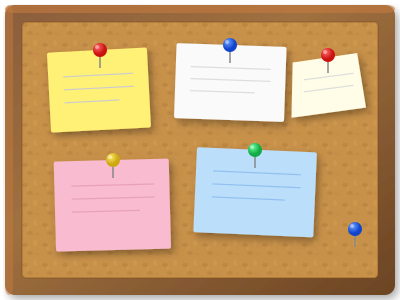

Versioned Data Collaboration in R
2026-03-04
How do you share data with your team?
Common pain points:
final_final_v3.csvA package for publishing and sharing data, models, and other R objects
Key benefits:
A pin is a stored R object with metadata
You can pin:
Data frames
Trained models
Lists
Spatial objects (sf)
Any R object
Choose the file type (“csv”, “json”, “rds”, “parquet”, “arrow”, “qs”)
A board is where pins live
Think of it as a cork board that you can relocate:

library(pins)
# Create a board in a local folder
my_board <- board_temp(versioned = TRUE)
my_board <- board_folder("penguins_board", versioned = TRUE)
# Creates folder if none exists.
# board_folder() creates a board inside a folder
# board_local() creates a board in a system data directory
# board_temp() is useful for examples and tests.Share lookup tables and reference datasets:
Benefit: Everyone uses the same version, easily updated centrally
One person cleans messy data, others analyze:
Store models for production use:
Cache API calls or database queries:
Pins may not be the best choice for:
The “sweet spot”:
Think of it as: Too complex for email, too simple for a full database
Different boards for different needs:
Publish pins via simple web hosting:
Great for: GitHub Pages, internal web servers, publishing reference data
Start simple: board_folder() on a shared network drive
If you have RStudio Connect: Use it! Purpose-built for this.
Cloud-enabled: S3/Azure/GCS boards scale well
The best board depends on what your IT already supports
GitHub works great for small CSVs in code repos!
Pins adds value for:
SharePoint absolutely works!
But consider:
Pins solution: pin_read("clean-sales") works the same for everyone
Not really the purpose of board_url()
board_url() is for datasets specifically published as pins
Parquet: Columnar file format, compressed, great for storage
Feather: Faster, less compressed, good for temporary use
Arrow: The ecosystem/engine that works with both formats
All work across R, Python, SQL, Spark, etc.
pin_write(), pin_read(), pin_list()Thank you!
Contact: your.email@company.com
Slides: [link to slides if hosted] :::::